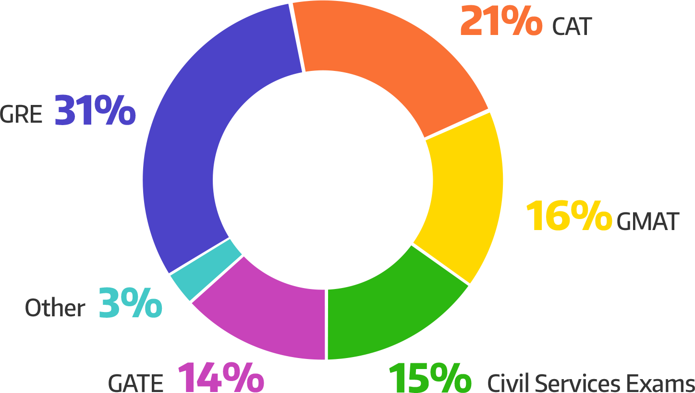

Academics
Department-wise classification
Which department are you from?

20.2% of the respondents were from Mechanical Engineering followed closely by electrical engineering at 17.5%. Humanities and social sciences had the lowest contribution of 0.3%.
Cumulative Performance Index (CPI)
What was your CPI/CGPA?
This year's Senior Survey respondents had an average CPI of 7.87. 163 of the 33 respondents had a CPI greater than 8 while only 43 had CPI greater than 9.
Attitude towards Academic Performance

The responses were quite symmetric as 35.7% just wanted a decent CPI while 32.6% though being sincere enough were unable to reach their potential
Expectations vs Reality
How would you rate the institute on the grounds of academic flexibility with 5 being the best?

The institute has always been praised for it’s multidisciplinary courses and academic flexibility. 63% respondents provided testimonials in the same vein giving a rating greater than or equal to 4 on 5. 21.4% rated the flexibility to be average i.e 3 on 5 and 28 students did not rate at all.
Attendance
Had you been given an option not to attend any class, how regularly would you have attended?

The responses were almost diametrically opposite as 39.75% said they would attend most of the classes while 32.5% would have rarely attended lectures, mostly before exams. 7.5% said they would they would attend all classes while 11.5% would have never seen lecture halls had they been given the option
Extent of Malpractices
How honest were you with your academics?

In an institution where a student is strongly penalised for performing academic malpractices, it is no surprise that 47.6% were totally honest in IIT. If situation permitted 23.2% did cheat while 18% always felt guilty about cheating at any given time.
Dishonesty: Causation
What propelled you to use unfair means?

Disinterest in a course proved to be a major factor for using unfair means having a contribution of 37.6%. 25.9% justified their usage by saying they were just going with the herd mentality as everyone else was doing it.
Dishonesty: Usage
In which of the following did you use unfair means?

Home assignments were the hotspot as 47.3% respondents used plagiarism to complete them. 68 students tried to misrepresent information in projects and/or presentations. The infamous quizzes were cheated on by only 15.3% of the respondents.
Ethics
How ethically wrong do you think academic dishonesty is?

While many might agree to committing academic malpractices when it comes to justifying its ethical correctness 89.6% responded with varying degrees of disagreement against academic dishonesty. 7.4% preferred to stay neutral while 3% believed there was nothing wrong as everyone is dishonest at some point of time in life.
Extracurriculars
Department-wise classification
Which department are you from?
20.2% of the respondents were from Mechanical Engineering followed closely by electrical engineering at 17.5%. Humanities and social sciences had the lowest contribution of 0.3%.
Career
Career Choice

Core sector, higher studies and consultancy jobs were primary career option for the seniors of 2016 having a contribution of 28.8%, 23% and 14.2% respectively. Finance sector will be pursued by 13% of the respondents while 5.8% will try to find success by being an entrepreneur. Although a small number, 4.5% have decided to enter politics.
The responses were a lot different when asked about employment 5 years down the line. The number of people interested in working in the core sector dropped down to 17.3% while entrepreneurship became the popular choice scoring 18.8%. Non-core sectors such as consultancy and finance dropped to 4.8% and 6.7% respectively.
Place of Posting
Where are you heading off to after passing out? Where in India are you heading?
Shattering the popular ‘Brain-Drain’ myth, almost 75% of our seniors will be working in India itself. U.S.A was a distant second at 16% while only 3% will be relocating to Europe. Of those choosing to remain in India 40% will continue to stay in Mumbai followed by Delhi and Bangalore by 21% and 17% respectively.
City for Posting
Where do you wish you were headed after graduating (irrespective of your posting)?
The responses of the batch of 2016 when asked where they would want to be placed ideally were quite different. In either case India still remained the top choice, this time bagging 44% of responses. However U.S.A was quite close as 32% wanted to be placed in the States. 15% wished they would get a chance to live and work in Europe. Canada, Japan, the Middle-East were some other choices.
Life after Graduation
Where would you like to settle?

‘Home Sweet Home’ was a popular choice as 71% of the graduating batch wished to settle in India itself. North America was a distant second at 16.6% while 8.4% wanted to settle in Europe.
Entrance Examinations
Have you appeared for or are you planning to appear for the following exams?

Life of an IITian begins with an entrance exam and most of the graduating batch wants to end it with one as well. 42% wished to give GRE to gain access to universities for higher studies and research. 98 respondents were IIM-aspirants and were preparing for the coveted CAT. 22% wanted to appear for GMAT while 20% wanted to prove their mettle by taking up civil services exams.
Core Karoge?

The responses were surprising as a whooping 59% chose not to answer this question. 17% responded positively and 13% said no while 11% were unsure about what they would have done had such situation occurred.
Influence of major internships
How much did your internships help you in making an effective career choice?
Internships were a massive influence for 35.5% respondents. 30% said their choices were moderately affected by internships. 9.3% were disappointed with their internship experience while 5.72% didn’t complete an internship post their pre-final year.
Change of Mind
Have you had a change of mind regarding the sector of your career after completing a major intern?
41% seniors remained firm about their career choice after completing their intern while 39% decided to pursue a different sector. 20% chose not to answer the question.
Narrative
There has always been a buzz about the career paths IITians choose after they graduate, and numerous questions have been raised and accusations been flung (looking at you, Mr. Katju!). We asked the graduating batch their plans for the immediate as well as the long -term future:
What they’re doing:
-
About 29% of the respondents said they have entered the field of technology/engineering or research for their first jobs; while an additional 22% said they have opted for higher studies. The ‘non-core’ fields consultancy and finance made 16% and 12% of the sample respectively. Other options like entrepreneurship and government (politics) took up 5% of the sample each. 5% of the graduating batch said they had little idea on what to do next, a perennial issue plaguing many graduating students since time immemorial.
-
Following the previous question, we asked the students about their plans 5 years after graduation, and noticed an interesting shift in choices. Respondents aspiring to venture into entrepreneurship rose to 19%, while those wishing to continue in technology/engineering shrank to 17%. Close to 18% of respondents said they wished to pursue higher studies some time in the future, if not immediately. 14% of the respondents wanted to enter politics or a government job. A poignant observation was that about 14% of respondents were confused about their plans in their career.
-
Of the 332 respondents, 140 said they planned on giving the GRE for prospects of higher studies abroad and 62 said they would appear for the GATE. The CAT and GMAT exams for management prospects saw interest from 98 and 74 respondents respectively. 68 students said they would appear for the Civil Services exams.
Where they’re headed:
-
Out of a total of 332 respondents, 247 (~74%) students are going to work/study in India right after graduation. Of these 247, 98 (~40%) students will work in Mumbai itself. Other popular cities of inhabitation after graduation are Bangalore (21%) and Delhi (17%). Another 17% is comprised by students who will live in Hyderabad, Pune, Chennai or other metropolitan cities.
-
Of the remaining 26% respondents not staying in India after graduation, 54 respondents are headed to the USA, while 10 to Japan/Taiwan/South Korea and 11 to Europe.
-
Although when asked where they would have liked to go irrespective of their posting, about 44% of respondents answered they’d like to stay in India. Other ‘dream’ destinations were the USA (32%), Europe (14%) and Canada (3%).
-
The number of respondents wanting to settle in India is high again, comprising of 71% of total respondents. 16% of respondents wanted to settle in North America, while 8.5% wanted to settle in Europe.
Opinions:
-
We asked students whether the internships they did over the course of their study helped them make decisions regarding their career. 35% of them agreed that they were highly influenced by their internships in making their career choices, while 30% said the internships were a mild influence. Only 10% of the respondents said that the internships had no influence.
-
We asked if the respondents had a change of mind regarding the sector of their career after an internship, and there were an even number of Yes’s (130) and No’s (135).
Opinion
About Hostel Rooms
How satisfied were you with your hostel rooms?

While 25% of respondents were indifferent about their room conditions, 36% said they were extremely dissatisfied with the cramped rooms. 24% still said they were content with their rooms.
About Mess food
What do you think of the mess food in hostels?

A third of the respondents felt that the mess food was highly disappointing, and that they mostly disliked it. Only 11% said they actually liked the food being served. The rest of the responses ranged from students being apathetic about what they ate, to not caring about the food since they hardly ate in the messes anyway.
On being an IIT-ian
Which of these would you say you failed to develop/missed out on because of studying in IIT?

152 of the 332 respondents did not feel so, affirming the fact that they felt that IIT had an environment conducive to honing an individual's overall skill-set.
On Social Disconnect
Do you feel a disconnect from other non-IITians in your age group?
When asked whether the IITians felt a social ‘disconnect’ from their peers from different institutes, 18% said they felt a huge disconnect while trying to socialize with peers of their own age. 54% said that this disconnect was momentary and didn’t matter much. Only 14% outright denied the existence of such a disconnect.
About startups and Entrepreneurship
Pick an option most applicable to you presently

While about 38% of students said they weren’t inclined towards startups and entrepreneurship in general, 10% of them said they founded or cofounded a startup or work currently at a startup. 36% said they wished to work for or found a startup in the future.
On Freedom of Expression
Is the current government is malevolently and systemically targeting students and their freedom of expression?
When asked on their opinion on the same, 86 respondents agreed while 90 disagreed. Although, almost half of the total respondents were neutral or chose not to answer the question.
On political inclinations
How would you describe your political leaning?

When asked to describe their political leaning, 102 respondents said they leaned towards the left (liberal) and 40 said they did so towards the right (conservative). However,190 of 332 respondents were either not politically inclined or chose not to answer.
On Religious Beliefs
What are your religious belief

On religious beliefs, while 39% respondents said they were believers, 21% said they identified as atheists. Another 39% said that they were agnostic.